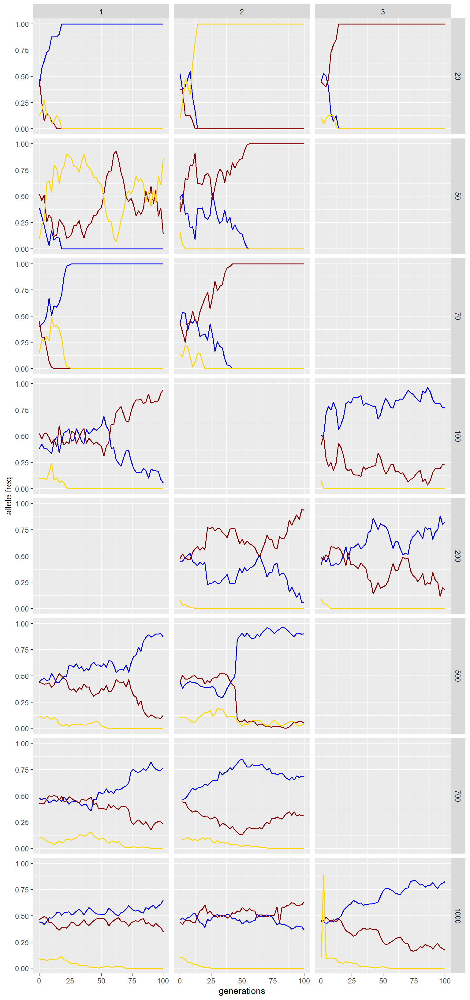
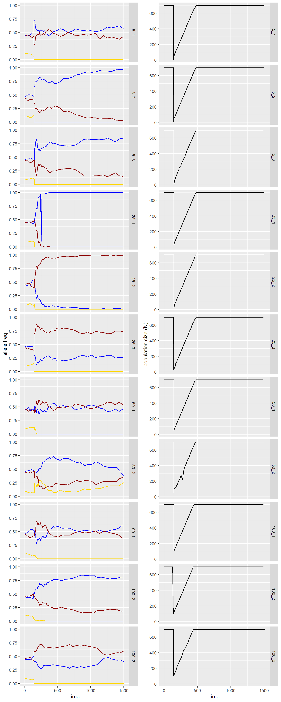
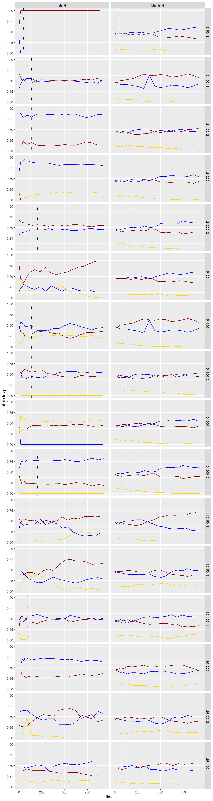

Date: 11/4/2020
Download the project folder here.
Make sure to download the entire folder (not just the contents).
You can open the Rproject directly by double-clicking on the file which will launch Rstudio, or once you have opened Rstudio open the project folder using File -> Open Project or using the Rproj icon in the top right corner above the environment panel.
Let’s go ahead and load the libraries we are going to use for this lab - remember anytime you restart your Rsession (e.g. by closing Rstudio or closing your project) you need to reload your libraries even if your environment is loaded/re-established.
We are also going to load a custom function that will allow us to combine two plots in a single figure for easier comparison.
# load library
library(tidyverse)
library(ggplot2)
library(knitr)
# custom function to combine plots
multiplot <- function(..., plotlist=NULL, file, cols=1, layout=NULL) {
library(grid)
# Make a list from the ... arguments and plotlist
plots <- c(list(...), plotlist)
numPlots = length(plots)
# If layout is NULL, then use 'cols' to determine layout
if (is.null(layout)) {
# Make the panel
# ncol: Number of columns of plots
# nrow: Number of rows needed, calculated from # of cols
layout <- matrix(seq(1, cols * ceiling(numPlots/cols)),
ncol = cols, nrow = ceiling(numPlots/cols))
}
if (numPlots==1) {
print(plots[[1]])
} else {
# Set up the page
grid.newpage()
pushViewport(viewport(layout = grid.layout(nrow(layout), ncol(layout))))
# Make each plot, in the correct location
for (i in 1:numPlots) {
# Get the i,j matrix positions of the regions that contain this subplot
matchidx <- as.data.frame(which(layout == i, arr.ind = TRUE))
print(plots[[i]], vp = viewport(layout.pos.row = matchidx$row,
layout.pos.col = matchidx$col))
}
}
}Learning Objectives
After completing this lab you should understand
The gene pool is the sum of a population’s genetic material at a specific point in time - it includes all the genes (coding DNA) and other loci (non-coding DNA) and all the alleles (variations of a given locus).
To genotype an individual, you would determine which combinations of alleles are present at each locus for each individual66 While whole genome sequencing is becoming cheaper and more accessible as we speak for most studies we genotype individuals for a set of loci throughout the genome. This could be a data set of “neutral loci” or a random subset representing the entire genome.. If an individual has two identical alleles that means it is a homozygote at that locus, conversely if it has two different alleles that individual would be a heterozygote for that locus. In general, higher levels of heterozygosity indicate higher levels of genetic diversity.
Frequently, we measure within individual diversity by determining the proportion of loci genotyped for an individual that are heterozygous. High levels of homozygosity are indicative of low genetic diversity. The inbreeding coefficient \(F_{is}\) essentially measures the homozygosity levels within individuals; a high \(F_{is}\) value indicates high levels of homozygosity and can be evidence of inbreeding occurring within a population.
► Question 14.1
Give a brief definition of what inbreeding is and use that definition to explain why inbreeding leads to an increase of within-individual homozygosity and why we expect inbreeding levels to increase with decreasing population sizes.
At a population level, we compare genetic diversity by comparing the number of different alleles present at a locus (allelic richness) and how the allele frequencies compare to each other (allelic diversity/evenness)67 This should sound very familiar to how we measures species richness & diversity!. But in addition, we also pay attention to levels of heterozygosity per locus, i.e. the proportion of individuals that have a homozygous genotype for a given locus.
In a population where there is no mutation, no selection, no drift, and no gene flow and assuming random mating, the allele frequencies should not change from one generation to the next68 Remember, evolution is defined as the change of allele frequencies over time, so this means that there are no evolutionary processes acting on the population.. When this is the case, a population is said to be in Hardy-Weinberg Equilibrium (HWE) and the the relationship of the allele frequencies at a locus with two alleles with the frequencies \(p\) and \(q\) can be described as
\[ p^{2} + 2pq + q^{2} = 1 \] Because observed allele frequencies are related to the levels of heterozygosity, this allows us to calculate the expected level of heterozygosity \(H_{e}\) using HWE and compare that to the observed level of heterozygosity \(H_{o}\) to determine whether genetic diversity is lower or higher than expected.
Usually, we are looking at closed(ish) populations (no gene flow) and mutation is negligible at ecological time scales so that it is either selection or genetic drift that is causing any deviations from HWE. By using neutral markers69 Parts of the DNA that do not code for traits cannot be under selection. for our assessments we can exclude selection, therefore we can use heterozygosity levels to determine whether genetic drift is occurring in a population70 Of course, the more complex your data set in terms of the number of loci, how many alleles per locus, whether or not drift is constant across the genome, if you get truly neutral markers … makes it a little more complicated.
► Question 14.2
Give a brief definition of what genetic drift is and use this definition to describe how it is related to population size and how it affects the genetic diversity of a population over time.
Hint
Let’s take a little look at what it means for allele frequencies to drift and why we frequently refer to it as sampling error.
Let’s assume we have a population with 10 diploid individuals (that means there are 2 alleles per individual in the genepool). We’re going to look at a locus with two alleles, and we’ll assume that in our initial population both alleles have a frequency of 0.5.
# population size
pop_size <- 10
# frequency allele 1
p <- 0.5
# frequency allele 2
q <- 0.5
# gene pool
genepool <- c(rep("Allele-1", p*pop_size*2), rep("Allele-2",q*pop_size*2))If we print our genepool we just created we’ll see that we have 10 of each allele present.
## [1] "Allele-1" "Allele-1" "Allele-1" "Allele-1" "Allele-1" "Allele-1" "Allele-1" "Allele-1" "Allele-1" "Allele-1" "Allele-2" "Allele-2"
## [13] "Allele-2" "Allele-2" "Allele-2" "Allele-2" "Allele-2" "Allele-2" "Allele-2" "Allele-2"For simplicity we are going to make three assumptions:
To model our next generation (Gen-1) we are going to randomly draw 20 alleles from our distribution with replacement (each reproduction event is discrete) and count the number of each of the alleles no present in the population.
## genepool
## Allele-1 Allele-2
## 7 13To model the generation after that (Gen-2), we will do the same thing, except now we will make the same random draw from Gen-1.
## genepool
## Allele-1 Allele-2
## 8 12We start to see how our allele counts (frequencies) start to drift, from generation to generation. They do not shift much f you are comparing two adjacent generations, but once you do this for several generations it is possible that the frequencies vary considerable from our initial equal distribution.
We can use a for loop to run this for 15 generations.
# number of generations
n_gen <- 15
# initial population size
pop_size <- 10
# frequency allele 1
p <- 0.5
# frequency allele 2
q <- 0.5
# original gene pool
genepool <- c(rep("Allele-1", p*pop_size*2), rep("Allele-2",q*pop_size*2))
# initial counts
counts <- table(genepool) %>%
as.data.frame() %>%
mutate(generation = 0)
# run model for multiple generations
for(i in 1:n_gen){
genepool <- sample(genepool, 20, replace = TRUE)
df <- table(genepool) %>%
as.data.frame() %>%
mutate(generation = i)
counts <- bind_rows(counts, df)
}Let’s take a look at our allele counts and how they change from one generation to the next.
kable(
counts %>%
pivot_wider(names_from = genepool, values_from = Freq) %>%
replace(is.na(.), 0),
caption = "Change in allele counts across generations in a population consisting of 20 individuals (sampled with replacement)."
)Table 14.1: Change in allele counts across generations in a population consisting of 20 individuals (sampled with replacement).
| generation | Allele-1 | Allele-2 |
|---|---|---|
| 0 | 10 | 10 |
| 1 | 10 | 10 |
| 2 | 11 | 9 |
| 3 | 12 | 8 |
| 4 | 11 | 9 |
| 5 | 12 | 8 |
| 6 | 14 | 6 |
| 7 | 11 | 9 |
| 8 | 12 | 8 |
| 9 | 13 | 7 |
| 10 | 14 | 6 |
| 11 | 16 | 4 |
| 12 | 17 | 3 |
| 13 | 18 | 2 |
| 14 | 16 | 4 |
| 15 | 18 | 2 |
► Question 14.3
Give a brief explanation of what it means for an allele to be/become fixed and explain how we can determine the probability of a given allele becoming fixed.
► Question 14.4
Explain why alleles becoming lost through genetic is problematic from a conservation genetics point of view (keywords: adaptive potential, genetic/mutational load).
► Question 14.5
Explain why genetic drift is generally only a concern in small populations and what it means when we say a population is sufficiently large to act as an infinite population.
For the remainder of this lab we are going to use a simulation to explore genetic drift and two special cases (bottlenecks and founder effects) where genetic drift plays a large role in shaping genetic drift.
Load the model in your browser and we will quickly orient ourselves to the different components.
Our model consists of a mainland population (large green square) and two islands (small green circles) that are currently still uninhabited. We also have various sets of controls that allows us to set the carrying capacity, population sizes, and simulate colonization events and bottlenecks as well as counters to track the allele frequencies.
In the bottom right we have two important buttons that control running the simulation overall Reset and Go. Go both starts and stops the simulation. Importantly, anytime we want to change parameters we need to stop the simulation, make our changes and then use the Reset button to initialize the the simulation for those settings before starting the simulation of a given scenario.
For now, let’s just focus on the mainland which is inhabited by a population where individuals display different phenotypes in terms of their color. This trait is determine by a single gene with incomplete dominance - this means that heterozygotes display a blend of the two alleles. There are three alleles, yellow, blue, and red. So for example, an individual that is homozygous for the red allele would be red and an individual that is orange would be a heterozygote for the yellow and red alleles.
► Question 14.6
Argue whether having no yellow individuals in the population necessarily means that there are no yellow alleles remaining in the population.
This population is at carrying capacity and remains stable over time, i.e. individuals in the population reproduce and die randomly over time but overall remains at the population size. When you run the model you will see that time is measured in two ways one using the ticks box and by tracking generations, because individuals die and reproduce continuously (i.e. there are overlapping generations). The population size N and the number of generations which have passed are tracked in the small yellow boxes at the bottom of the mainland simulation.
We can change the carrying capacity of the mainland (Mainland-K) using the slider in the green box to the left. Make sure the Stop-at-Fixation box is unchecked.
Choose a value for Mainland-K and hit the Reset button. If you look at the yellow recording boxes you should see N have the same value as the carrying capacity you chose and the Generation box should be 0. Take a look at the initial frequencies for the Yellow, Blue, and Red alleles. Now change the carrying capacity and hit the Reset button again, you should see the allele frequencies stay approximately the same (i.e. our starting values will be comparable regardless of our initial N) but the population size N should have stayed approximately the same.
► Question 14.7
Based on the initial allele frequencies argue which allele(s) you expect to be lost first and hypothesize the relationship the time to fixation for an allele and the generation time depending on the initial population size.
Everyone is going to run two scenarios for differing population sizes and record the allele frequencies every generation for 100 generations.
For the first set you will run two scenarios depending on which “column” you are sitting in.
In our project folder, there is a shared spreadsheet titled drift that we will use to gather all the results. You should use the same column names to record your results in a separate excel spreadsheet or google doc first before transferring your data to the main data set. To be able to distinguish between different runs with the same parameters put your initials in the column Run.
Once all the data has been uploaded save the data in your data sub-directory of the project folder as drift.txt.
Let’s take a look at our results.
drift <- read_delim("data/drift.txt", delim = "\t") %>%
pivot_longer(cols = 5:7, names_to = "Allele", values_to = "Freq")
ggplot(drift, aes(x = Generation, y = Freq, color = Allele)) +
geom_line(size = 0.6) +
scale_color_manual(values = c("blue", "darkred", "gold")) +
scale_y_continuous(limits = c(0, 1)) +
facet_grid(K_Mainland ~ Run) +
labs(x = "generations", y = "allele freq") +
theme(legend.position = "none")Figure 14.1: Change in allele frequencies across time for three alleles (blue, red, yellow) for 20 - 1,000 individuals in the populations. Columns 1, 2, and 3 indicate separate runs.
► Question 14.8
Give a brief description of the major patterns you observe. This should include comparing difference among population sizes (think back to your answer to the question above), differences among runs of the same initial population size, and differences for different initial allele frequencies.
► Question 14.9
Use your description from the question above to explain the key characteristics of genetic drift in terms of the relationship of the strength of genetic drift and population size, the relationship of the initial allele frequency and the probability of an allele being lost due to drift, the fact that drift is a stochastic effect, and what it means for genetic drift to be random in respect to fitness.
► Question 14.10
Give a brief description of a bottleneck and explain how it is expected to affect the genetic diversity of a population. Distinguish between a demographic bottleneck and a genetic bottleneck and argue whether those always co-occur.
We can use our model to simulate a population bottleneck. You can determine the magnitude of the simulated bottleneck using the Bottleneck-size slider to determine the number of individuals that remain in the population. Then, you can create the bottleneck by clicking on the blue Bottleneck button. When you do this, you will see the number of individuals in the mainland population in the yellow N reporting box drop to the specified time. As you continue to let the model run the population will grow until it reaches carrying capacity, you can track the change in population size in the yellow reporting box.
► Question 14.11
Explain how you expect the allele frequencies in the population to change after a bottleneck occurs depending on how small the remaining population is.
► Question 14.12
Argue which allele you think is most likely to be lost during the bottleneck and whether or not you think there is a higher chance of that occuring depending on how small the remaining population is after the bottlneck.
► Question 14.13
Explain how you expect the genetic diversity to be affected depending on how long a population remains at low population sizes/how long it takes for a population to recover.
► Question 14.14
Argue whether or not you would expect the allele frequencies of the population to look the same as they did before the population bottleneck after the population recovers to its initial population size.
We are going test our hypothesis by simulating four different bottlenecks. To do this, we are going to set our mainland carrying capacity to 700 and then you will run the simulation for five generations before initiating the bottleneck. For those five generations record the allele frequencies and population size every generation. After initiating the bottleneck, record the allele frequencies and population size every 10 ticks until your population size reaches carrying capacity (you will need to slow down the simulation using the slider at the very top of your screen) at which point you will record the results every generation until the the simulation has run for 50 generations.
There is a google doc in our project folder called bottleneck in which we will gather all the results. Again, you should record your results first separately but make sure to use the same set of column headings.
Once all the data has been recorded save the results as a tab-delimited file in your data sub-directory as bottleneck.txt.
Now, let’s take a look at our results.
bottleneck <- read_delim("data/bottleneck.txt", delim = "\t") %>%
unite(col = "Group", Bottleneck, Run, sep = "_") %>%
pivot_longer(cols = 6:8, names_to = "Allele", values_to = "Freq") %>%
mutate(Group = ordered(Group, levels = c("5_1", "5_2", "5_3",
"25_1", "25_2", "25_3",
"50_1", "50_2",
"100_1", "100_2", "100_3")))
p1 <- ggplot(bottleneck, aes(x = Ticks, y = Freq, color = Allele)) +
geom_line(size = .6) +
scale_color_manual(values = c("blue", "darkred", "gold")) +
scale_y_continuous(limits = c(0, 1)) +
facet_grid(Group ~ .) +
labs(x = "time", y = "allele freq") +
theme(legend.position = "none")
p2 <- ggplot(bottleneck, aes(x = Ticks, y = N_Mainland)) +
geom_line(size = .6) +
facet_grid(Group ~ .) +
labs(x = "time", y = "population size (N)")
multiplot(p1, p2, cols = 2)Figure 14.2: Change in allele frequencies over time for populations with an initial population size of N = 700 experiencing a bottleneck of N = 5, 25, 50, 100 remaining individuals.
► Question 14.15
Give a brief description of the major patterns you observe. This should include comparing difference among bottleneck sizes (think back to your answers to the questions above), differences among runs of the same bottleneck size, and differences for different initial allele frequencies.
► Question 14.16
Use your description from the question above to explain the key characteristics of a bottleneck in terms of how strongly the genetic diversity is affected in relation to how small the bottlenecked population is, the allele frequencies before the bottleneck, the probability of alleles being lost based on their pre-bottleneck allele frequency, the stochastic nature of a bottleneck.
► Question 14.17
Give a brief description of what a founder effect is, explain how it impacts genetic diversity and why it is important to consider for certain conservation/managment strategies.
Hint
For our final query into the world of loss of genetic diversity we will use our model to simulate a few different scenarios of founder effects.
On the right hand of the screen you have two islands (Island-1, Island-2). You can determine the founding population size (Founding-N-1, Founding-N-2) and the carrying capacity of each island (Isle-1-K, Isle-2-K). Once you have set your values, make sure to hit reset to initialize the mainland population. Then use the colonize 1 and colonize 2 buttons to randomly draw individuals from the mainland population as the colonizers. Once you start the simulation using the Go button you will be able to track the allele frequencies in each of the island populations and the population sizes in the yellow reporting boxes below the islands.
► Question 14.18
Explain how you expect the allele frequencies in the recently founded island population to change compared to the mainland population depending on the number of individual in the founding population.
► Question 14.19
Argue which allele you think is most likely to be lost during colonization and whether or not you think there is a higher chance of that occuring depending on how small the founding population is.
► Question 14.20
Argue how you expect the genetic diversity (both in terms of allele frequencies and alleles present) to compare to the mainland population depending on how large the carrying capcity of the island population is and how many generations have passed since the inital founding.
Again, we are going to run a set of scenarios to illustrate how different size of founding populations and carrying capacity on the island affects the genetic diversity.
For each scenario we will have a mainland carrying capacity of 700 individuals. Make sure to hit Reset to initialize the mainland population.
Next, you will set your parameters for the two island populations and hit colonize to found your populations.
You will not get initial allele frequencies for the island populations right after colonizing so stop the simulation within one or two tick marks to get initial allele frequencies for the islands.
Similar to the bottleneck simulations, you will record your results every 15 tick marks until your island population reaches carrying capacity or a minimum of three generations have passed, then record your results every two generations for a total of 30 generations.
Here are the scenarios we are going to run:
There is a google doc in our project folder called founder for you to record your result. As with the two previous components of this lab you should record your results separately first before uploading to the shared file.
Once all all the results have been collected save the results as a tab-delimited file in your data subdirectory as founder.txt.
Let’s take a look at our results.
founder <- read_delim("data/founder.txt", delim = "\t") %>%
pivot_longer(cols = 9:14, names_to = "Allele", values_to = "Freq") %>%
separate(Allele, into = c("Allele", "Category"), sep = "_") %>%
unite(Scenario, N_Founding, K_Island, Run, sep = "_", remove = FALSE) %>%
mutate(Scenario = ordered(Scenario, levels = c("2_50_1", "2_100_1", "2_100_2", "2_200_1", "2_200_2",
"5_50_1", "5_100_1", "5_100_2", "5_200_1", "5_200_2",
"10_50_1", "10_50_2", "10_100_1", "10_200_1",
"25_50_2", "25_100_1")))
K <- founder %>%
filter(N_Island == K_Island) %>%
group_by(Scenario) %>%
slice_min(order_by = Time, n = 1) %>%
select(Scenario, Time) %>%
distinct()
ggplot(founder, aes(x = Time, y = Freq, color = Allele)) +
geom_line(size = 0.6) +
geom_vline(data = K, aes(xintercept = Time), linetype = "dotted") +
scale_color_manual(values = c("blue", "darkred", "gold")) +
scale_y_continuous(limits = c(0, 1)) +
facet_grid(Scenario ~ Category) +
labs(x = "time", y = "allele freq") +
theme(legend.position = "none")Figure 14.3: Change in allele frequencies on the mainland and an island population colonized by 2, 5, 10, or 25 individuals with a carrying capacity of 50, 100, or 200 individuals. Each row is identified as N_Founding/K_Island_Run.
► Question 14.21
Give a brief description of the major patterns you observe. This should include comparing difference among the sizes of founder effects and the carrying capacity of the island (think back to your answers to the questions above), differences among runs of the scenarios, and how different the island population is from the mainland population it originated from over time.
► Question 14.22
Use your description from the question above to explain the key characteristics of the founder effect are in terms of how different the genetic diversity of island populations is from the mainland population (both in terms of alleles present and allele frequencies), how this is impacted by the founding size/carrying capacity, the probability of alleles being lost both during the initial colonization event and afterwards, and factors contributing to the stochastic nature of a founding event.
Page built: 2020-11-11